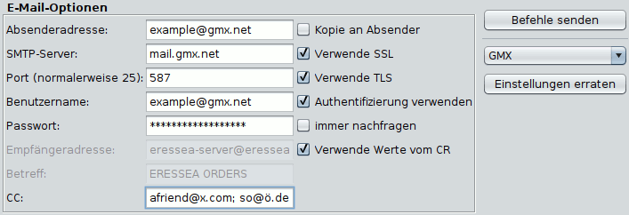
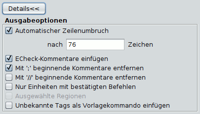

Befehle speichern

Zum Speichern oder Verschicken der Befehle stehen folgende Optionen (Reiter) zur Verfügung:
- E-Mail
Verschickt die Befehle direkt per Mail. Magellan kann für einige populäre Mailprovider die nötigen Einstellungen erraten. Dann müssen Sie nur noch das Passwort eingeben. Sollte dies nicht möglich sein können Sie die restlichen Einstellungen selber ausfüllen. Falls Sie die Einstellungen nicht kennen, hilft häufig eine einfache Internetsuche nach "SMTP-Einstellungen für Providername". Bei manchen Providern muss man diese Funktion erst in den Emaileinstellungen freischalten. Besuchen Sie dazu die Internetseite Ihres Providers. Diese Einstellungen haben nichts mit Eressea zu tun, aber die Eressea-Community hilft in solchen Fragen gerne weiter, wenn man nett fragt.
- Einstellungen erraten
Versucht die Servereinstellungen aus der Absenderadresse zu erraten oder bietet die Möglichkeit, aus einer Liste populärer Anbieter auszuwählen. - Absenderadresse
Ihre Emailadresse, von der aus die Befehle verschickt werden sollen. - SMTP-Server
Hier trägt man den Mailserver seines Internetproviders ein (zum Beispiel smtp.provider.de). - Port
Diese Einstellungen müssen Sie über ihren Provider in Erfahrung bringen. Gängige Werte sind 25, 465 oder 587. - Verwende SSL / Verwende TLS
Diese Einstellungen hängen vom Protokoll ab, die ihr Provider verwendet. Versuchen Sie im Zweifel, beide auszuwählen. - Authentifizierung verwenden
Für die meisten Provider muss dieses Kästchen heutzutage aktiviert sein. - Benutzername
Häufig identisch mit der Absenderadresse, aber auch dies hängt vom Provider ab. - Passwort
Magellan kann ihr Passwort speichern. Dies bedeutet ein gewisses Risiko, falls jemand mit unlauteren Absichten Zugriff auf ihren Computer erlangt. Sie können das Häkchen bei "immer nachfragen" setzen, dann müssen Sie das Passwort jedes Mal neu eingeben, dafür ist es sicherer. - Empfängeradresse
Hier wird die Mail-Adresse des Eressea-Servers angegeben. Magellan kann sie normalerweise aus dem Report auslesen, aber sollte dies nicht gelingen, können Sie sie hier eingeben (zum Beispiel eressea-server@eressea.kn-bremen.de). - Betreff
Der Betreff der Mail (zum Beispiel Eressea Befehle). - CC
Hier können sie eine oder mehrere Adressen (getrennt durch Kommas) eingeben, an die der Report ebenfalls geschickt werden soll.
- Einstellungen erraten
- Datei
Speichert die Befehle in eine Datei mit dem angegebenen Namen. Wählen Sie die Box Auto-Dateiname um spezielle Kürzel als Teil des Dateinamens zu verwenden. So bewirkt etwa 'befehle-{round}.txt', dass der Name die aktuelle Runde enthält, zum Beispiel befehle-123.txt. - Zwischenablage
Kopiert die Befehlsdatei in die Zwischenablage. Von dort kann sie z.B. sehr einfach in ein Mailprogramm übernommen werden. - Serverupload
Lädt die Befehle direkt auf den Server, ohne Umweg über Email. Die Befehle werden nicht (durch ECheck) überprüft. Die voreingestellte Adresse funktionert für Eressea, aber möglicherweise nicht für andere Spiele. Sie ist, falls vorgesehen, bei der Spielleitung zu erfragen.
- Schließen
Schließt den Dialog und speichert alle Einstellungen. - Abbrechen
Schließt den Dialog ohne die Einstellungen zu speichern.
Ausgabeoptionen
Durch Klicken auf "Details" erhalten Sie Zugriff auf weitere Funktionen, die das genaue Aussehen der exportierten Befehle bestimmen.
- Automatischer Zeilenumbruch
Bricht die Befehlsdatei nach n Zeichen um. Längere Zeilen (Beschreibungen, Botschaften, etc.) werden dabei automatisch mit " \" getrennt. Vermeidet Probleme mit dem automatischen Zeilenumbruch von Mailprogrammen. - ECheck-Kommentare
Fügt Kommentare für das Zugcheckerprogramm ECheck (wie Angaben über Silber und Personen) in die Befehlsdatei ein. - Mit ';' beginnende Kommentare entfernen
Entfernt nichtpersistente Kommentare aus der Befehlsdatei. Nach Möglichkeit sollte diese Option zum Verschicken der Mail an den Eressea-Server angewählt sein, um die Befehlsdatei so klein wie möglich zu machen. Allerdings gehen hierbei auch die Informationen über die Bestätigung der Befehle der Einheiten verloren, da diese in ';'-Kommentaren abgelegt werden. - Mit '//' beginnende Kommentare entfernen
Entfernt persistente Kommentare aus der Befehlsdatei. Vorlage-Benutzer sollten diese Option tunlichst nicht benutzen, da so auch alle Metabefehle gelöscht werden. - Nur Einheiten mit bestätigten Befehlen
Nur Befehle bestätigter Einheiten werden geschrieben. Unbestätigte Einheiten werden ignoriert. Diese Option ist sehr praktisch für Spieler, die sich eine Partei teilen. - Ausgewählte Regionen
Hiermit kann man festlegen, dass nur Befehle für Einheiten verschickt werden, die gerade in der Karte ausgewählt (selektiert) sind. So kann man stückweise Befehle an den Server schicken. - Unbekannte Tags als Vorlage einfügen
Damit werden unbekannte Tags in die Befehlsdatei geschrieben. Diese Option ergibt wahrscheinlich nur für Benutzer des Zugautomatisierungsprogramms Vorlage einen Sinn.